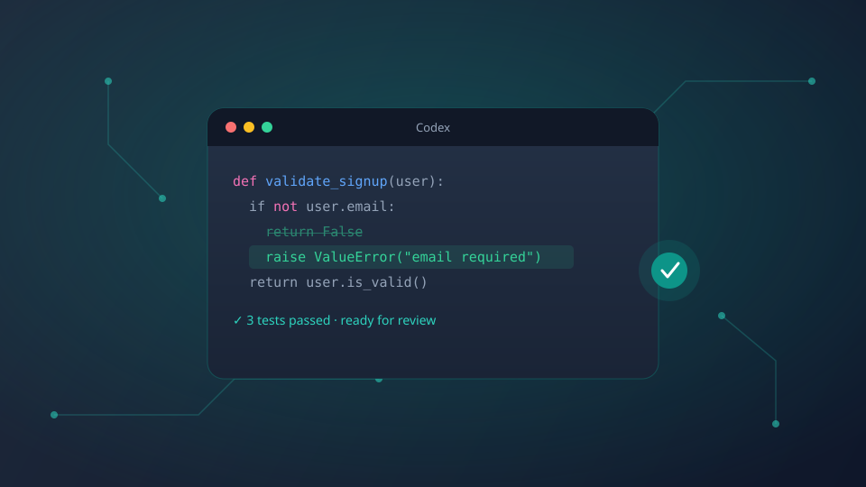

Codex Product identity, category and offering company verified from official sources.
Offered by•OpenAI
Codex is OpenAI's AI coding agent for software engineering work, from writing code and fixing bugs to running tests, reviewing changes and working across development environments.

Codex product facts
Key product, company and availability information curated from official sources and reliable public references.
Product Overview
Codex is built for people and teams who want AI help with real software development work, not just quick code suggestions.
Codex is OpenAI's AI coding agent for software engineering tasks. It can help developers write code, understand existing repositories, fix bugs, refactor files, run tests and prepare changes for human review.
Instead of working like a simple autocomplete tool, Codex is designed around task-based coding work. A user can describe what needs to be done, and Codex can work through the codebase, make changes, check results and return an update that a developer can review.
It is most useful for developers who need help with code changes and debugging, engineering teams running pull requests and code review, and technical founders or product teams who want to turn requirements into working changes faster.
"Codex is not meant to remove developers from the process. It works best as a coding agent that prepares useful work, runs available checks and gives developers a clearer starting point for final review."
What Codex Is Best For
Codex helps developers with code changes and debugging, supports engineering teams with pull requests and code review, and helps technical founders and product teams build and improve product code faster with AI support.
How Codex Fits the Workflow
Codex fits between task planning and human review — understanding a coding task, checking the codebase, making changes, running available tests, and handing off a clear summary for developer review.
What Codex Doesn't Replace
Codex is best treated as a coding assistant or agent that prepares work for human review. Developers still need to check logic, quality, security and final changes before merge or release.
Available On
Codex can be used across different development surfaces, from ChatGPT to editor, terminal and cloud-based coding workflows.
ChatGPT
Use Codex inside ChatGPT for coding tasks, repo work and guided development help.
Open CodexCloud Environment
Let Codex work in a controlled cloud workspace with repo context and task handling.
Learn MoreAvailability may depend on the user's OpenAI account, workspace access, region and product setup.
View Codex Access OptionsHow Teams Use Codex
Codex helps with practical software work, from small fixes to larger engineering tasks that need code changes, testing and review.
Build New Features
Turn a task or product request into code changes across the project.
View ExampleFix Bugs
Review the issue, inspect relevant files and prepare a fix for developer review.
View ExampleRun Tests
Use available test commands or suggest checks to confirm whether changes work.
View ExampleReview Pull Requests
Check code changes for bugs, risks, missing tests or possible improvements.
View ExampleMaintain Codebases
Handle routine updates, dependency-related tasks and small maintenance work.
View ExampleCodex pricing and access
Automatically updated pricing, plans, and access information extracted from OpenAI's official website. Data is regularly checked and may change.
Included with ChatGPT Plan
Included / eligible plan
Billing: Included with plan · Target: Individual users
Access: Standard usage limits apply
View PlanChatGPT Team / Enterprise
Included / workspace plan
Billing: Included with plan · Target: Business / Enterprise
Access: Higher limits, admin controls
Contact SalesAPI / Usage-based
Usage-based / varies
Billing: Usage-based · Target: Developers, custom integrations
Access: Custom, depends on usage
View PricingAbout Pricing Data
Codex pricing and access details are collected from OpenAI's official product and pricing sources. If a source doesn't publish an exact price, this page will not invent one — it shows "Included with eligible plan", "Contact Sales" or "Not publicly listed" instead.
Access & Eligibility
Available through ChatGPT, IDE extension, Codex CLI and Cloud environment. Availability can depend on account, workspace, region and product setup.
Official Links
Core Capabilities
Codex supports the main parts of agentic software work: understanding code, making changes, checking results and preparing work for review.
Code Generation
Creates or updates code from a task, issue or product request.
Repository Understanding
Reads project structure, files and context before making changes.
File Editing
Modifies relevant files and prepares changes for review.
Debugging Support
Inspects errors, traces likely causes and prepares fixes.
Test Running
Runs available test commands where the environment supports it.
Code Review
Checks changes for bugs, regressions, missing tests or risky logic.
Refactoring
Improves structure and updates older patterns without changing intent.
Task Handoff
Returns a clear summary of changes, checks and next review needs.
Exact capabilities may vary by product surface, account access, project setup and available tools.
Compare AI Coding ToolsWhere Codex Fits in the Workflow
Codex fits between task planning and human review, helping developers move from request to checked code faster.
Task Input
A developer, founder or team gives Codex a coding task, issue or product request.
StartCodebase Review
Relevant files, project structure and existing patterns are checked before changes.
Code Changes
Code is written, edited, refactored or fixed based on the task.
BuildTesting & Checks
Available tests, commands or review steps are used where supported.
CheckHuman Review
A developer reviews the final changes before merge, release or deployment.
ReviewCodex is not meant to remove developers from the process. It works best as a coding agent that prepares useful work, runs available checks and gives developers a clearer starting point for final review.
Faster task execution
Turns small issues or product requests into review-ready code changes.
Cleaner maintenance work
Helps with repeated fixes, refactors and updates across a codebase.
Better review preparation
Summarizes changes and highlights checks before a developer reviews the work.
Support for busy teams
Handles focused coding tasks while engineers stay in control of final decisions.
Codex Alternatives
Codex sits in a growing group of AI coding tools. Some focus on editor autocomplete, some on agentic coding, and some on full software task execution.
GitHub Copilot
GitHub / Microsoft — AI code suggestions inside developer workflows. Strong for editor-based coding help and developer productivity.
Cursor
Anysphere — AI-first code editor with chat, codebase context and agent-style editing.
Claude Code
Anthropic — Terminal-based agentic coding for codebase tasks. Strong for command-line coding workflows and repo-level work.
Devin
Cognition — AI software engineering agent for larger task execution and autonomous engineering task handling.
Replit Agent
Replit — Building and editing apps inside Replit's cloud workspace. Strong for cloud app building and fast prototyping.
Amazon Q Developer
Amazon Web Services — AI assistance for development, AWS workflows and enterprise coding tasks.
| Compare By | What Users Should Check |
|---|---|
| Where It Works | Editor, terminal, ChatGPT, cloud workspace or browser-based environment. |
| Depth of Coding Help | Autocomplete, chat help, file edits, repo-level changes or agentic task work. |
| Team Fit | Solo developer, startup team, enterprise engineering team or cloud-first builder. |
| Review Control | How clearly the tool shows changes, checks and final review needs. |
| Pricing / Access | Plan limits, workspace access, enterprise options and included usage. |
Offered By
Codex is offered by OpenAI, the AI research and product company behind ChatGPT, OpenAI API products and Codex.
OpenAI
Company Type: AI research and product company
Known For: ChatGPT, OpenAI API, AI models and Codex
Primary Product Area: Artificial intelligence, developer tools and AI-powered productivity
Website: openai.com
Codex is part of OpenAI's product ecosystem. It connects OpenAI's AI model capabilities with software engineering workflows, helping developers and teams work on code through ChatGPT, editor, terminal and cloud-based environments.
Leadership Behind Codex
Codex is not a standalone founder-led product. It is developed by OpenAI, so the most relevant people are OpenAI leaders connected to the company's product, engineering and AI direction.
Sam Altman
CEO, OpenAI — Leads OpenAI, the company behind Codex, ChatGPT and OpenAI's broader AI product direction.
View ProfileGreg Brockman
President, OpenAI — Connected to OpenAI's technical and product direction, including engineering-focused AI work.
View ProfileOpenAI Product & Engineering Team
Team behind OpenAI products — Codex is a company-built coding agent, shaped by OpenAI's product and engineering work rather than a single public founder.
View OpenAICodex should not be presented as having a separate public founder. It is best shown as an OpenAI product with relevant company leadership and team connection.
Related Topics
Codex connects with several AI, software and developer-tool topics that help users understand the wider market around AI coding agents.
AI Coding Agents
Codex belongs most directly to this topic because it can work on software tasks, edit code, run checks and prepare work for review.
View TopicCode Generation
Codex can help create and update code from task instructions, issues or product requests.
View TopicAI Code Review
Codex can review changes, flag possible risks and support human code review workflows.
View TopicDeveloper Tools
Codex fits into the broader developer-tool category because it supports software engineering work.
View TopicAgentic AI
Codex works as an agent-style product that can handle multi-step coding tasks with context.
View TopicSoftware Testing
Codex can help run or suggest checks where the project environment supports testing.
View TopicCLI Tools
Codex connects with terminal-based workflows through Codex CLI and command-line usage.
View TopicAI Productivity Tools
Codex supports productivity by helping teams reduce manual coding, review and maintenance effort.
View TopicPrompt Engineering for Developers
Developers need clear task instructions to get better coding-agent results from tools like Codex.
View TopicIndustry Connection
Codex mainly fits under Artificial Intelligence Software, with natural links to developer tools, software development, cloud workflows and enterprise technology.
Artificial Intelligence Software
Codex is an AI-powered software product built for coding, code review, testing and software engineering workflows.
View IndustrySoftware Development
Codex supports feature building, bug fixing, refactoring and code maintenance.
View IndustryDeveloper Tools
Codex works directly inside developer workflows across ChatGPT, editor, terminal and cloud environments.
View IndustryCloud Computing
Codex can connect with cloud-based workspaces, remote environments and repo-level task handling.
View IndustryDevOps
Codex relates to testing, pull requests, CI/CD checks, issue handling and release-support workflows.
View IndustryEnterprise Software
Teams can use Codex to support internal product development, review work and codebase maintenance.
View IndustryRelated Insights
Explore articles, guides and comparisons that help users understand Codex, AI coding agents and the wider developer-tool market.
What Are AI Coding Agents?
Guide — Explains the broader category Codex belongs to and how coding agents differ from normal code assistants.
Read InsightCodex vs GitHub Copilot: Key Differences
Comparison — Helps users compare Codex with one of the most familiar AI coding tools.
Read InsightBest AI Coding Tools for Developers
List — Places Codex alongside other tools like Cursor, Claude Code, Devin and Replit Agent.
Read InsightHow AI Code Review Tools Work
Explainer — Connects with Codex's review and quality-check use cases.
Read InsightAgentic AI in Software Development
Analysis — Explains how multi-step AI agents are changing coding, testing and engineering workflows.
Read InsightUsing AI Tools Without Losing Code Quality
Guide — Useful for teams that want AI speed but still need human review, tests and clean delivery.
Read InsightFrequently Asked Questions
Quick answers to common questions about Codex, its use cases, access and how it compares with other AI coding tools.
Codex is OpenAI's AI coding agent for software engineering tasks. It can help write code, fix bugs, review changes, run checks and work with project context.
Codex is offered by OpenAI, the company behind ChatGPT and other AI products.
Codex is mainly built for developers and engineering teams, but technical founders and product teams can also use it for software-related work.
Codex can be used across OpenAI-supported coding surfaces such as ChatGPT, editor workflows, terminal workflows and cloud-based coding environments, depending on access and setup.
Codex can help with code generation, debugging, refactoring, testing, code review, documentation and maintenance tasks.
No. Both are AI coding tools, but they may differ in product surface, workflow style, task depth and how they support agentic coding work.
No. Codex is best treated as a coding assistant or agent that prepares work for human review. Developers still need to check logic, quality, security and final changes.
Access and pricing may depend on OpenAI plans, account type, workspace setup and product availability.
Source Confidence
How certain each part of this profile is, checked against official OpenAI sources.
Sources checked (8)
Update trigger: review this profile when OpenAI changes Codex pricing, its product lineup, or access/regional policies. Sources are drawn from OpenAI's official product pages, developer documentation and policy pages.
Ready to Explore Codex?
Check Codex from OpenAI, compare it with other AI coding tools, or suggest an update if any product details need review.